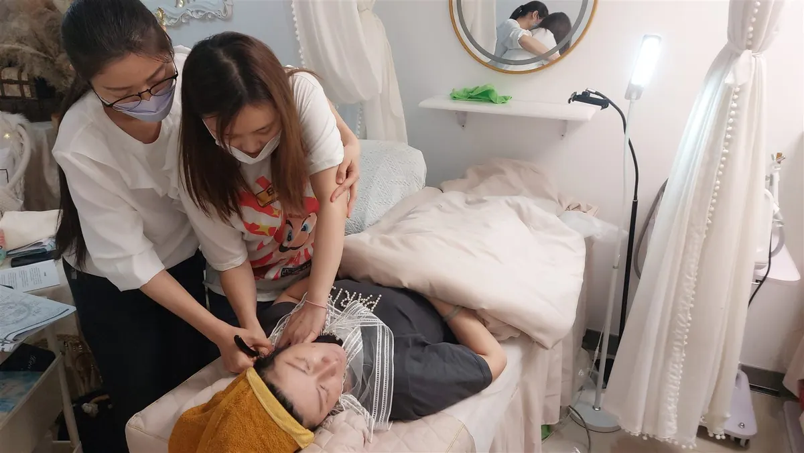

The Bojin Journal · The method
How Much Pressure for Bojin? Comfort, Control, and When to Stop

You have watched the demonstration, but one question is still hard to answer through a screen: am I pressing enough? It is tempting to look for a stronger sensation as reassurance. You do not need to earn an ache, redness, or a visible change for a few quiet minutes of self-care to count.
For at-home Bojin, begin with light, controlled contact in a placement you have been shown. Do not add force to chase a feeling of release. This guide offers comfort and decision checks, not a measured pressure prescription or a complete face routine.
There is no pressure number to copy from a page
A narrow tip and a broad surface do not make the same kind of contact. Tool shape, placement, skin condition, and the way you hold the handle all affect the experience. A number on a one-to-ten scale would still be subjective; this article does not provide a validated force setting.
A video can show position and pace, but it cannot measure the force in your hand. If the placement is unclear, pause rather than pressing harder until it feels convincing.
Keep contact light and controlled. Pain, a dull ache, redness, and bruising are not targets. Feeling very little is not a reason to increase force.
“Too light does nothing” is not a helpful rule
You cannot tell from the intensity of a sensation whether you have reached fascia, released a muscle, or changed facial structure. A strong feeling is not evidence of a better result. There is no minimum ache you need to find.
If you notice little, you can simply leave the session there. If you want to review technique, revisit the demonstrated placement and comfortable tool handling. Do that without turning the review into repeated pressing on one spot.
Comfort matters, but it is not medical clearance
Stop if contact hurts, stings, makes you brace, or causes irritation. At the same time, a painless sensation does not guarantee that a technique suits your skin, medication, or recovery after a procedure.
If you bruise easily, take blood thinners, have an active skin problem, or have had a recent facial procedure, ask your clinician before starting. Do not use “I will keep it light” as a substitute for that advice. For more context, read when to postpone Bojin.
Five checks before and during practice
These are decisions to help you avoid chasing intensity. They are not instructions for treating a symptom or finding deeper tissue.
- Check whether practice is appropriate Skip irritated, injured, swollen, or painful skin. If you bruise easily, take blood thinners, or have had a recent facial procedure, ask your clinician before starting rather than assuming lighter pressure makes it suitable.
- Check handling away from your face Make sure you can guide and stop the tool comfortably. If it slips or your hand hurts, put it down and address control before considering skin contact.
- Begin only with a clear placement Use light contact in a placement you have been shown. Keep off the eyeball and do not improvise deep pressure near the eyes or on the neck. A general pressure article cannot teach every placement.
- Treat discomfort as a reason to stop Lift the tool away if you feel pain, stinging, numbness, or a need to brace, or see skin dragging or irritation. Do not push through or repeatedly test the same uncomfortable spot.
- Review without chasing intensity If contact stays comfortable, keep the practice brief and optional. Do not add force or repetitions because you cannot see a change. If you are unsure, stop and ask for clarification before another attempt.
If the skin catches or the handle slips
Put the tool down first. Catching during a gliding movement may call for reviewing skin preparation, angle, or control; more force is not the default answer. A slippery handle is a separate handling problem. Read slip, pressure, and skin comfort before changing products or continuing.
If one side feels different
You do not need to match the sensation on both sides. A feeling of tightness does not tell you that one side can tolerate more pressure, and this article cannot diagnose the difference.
Leave a painful or swollen area alone and seek assessment for new or unexplained symptoms. Sudden facial drooping, arm weakness, or speech difficulty needs emergency medical help; do not try to massage it away.
Afterward: notice, without grading your face
You may enjoy the pause, or you may notice no change. Neither outcome is an instruction to push harder next time. This guide does not establish that a particular pressure lifts skin, improves product absorption, or produces lasting changes in appearance.
If soreness, bruising, or irritation appears, stop practice on that area rather than planning another session at a lower intensity. Persistent, worsening, or unexplained symptoms deserve advice from a healthcare professional.
Sources and scope
- Cleveland Clinic: gua sha benefits and risks discusses gentle facial contact, skin irritation, and precautions. Bojin is a distinct practice; this source does not validate a Bojin pressure threshold or its results.
- CDC: signs and symptoms of stroke explains why sudden facial drooping, arm weakness, and speech difficulty require emergency care.
Quick answers
How hard should I press during Bojin?
Start with light contact only in a placement you have been shown and can control. Do not increase pressure to chase an ache, redness, or a feeling of reaching deeper tissue. There is no validated force setting in this guide that fits every face or tool.
If I barely feel anything, should I press harder?
No. A faint sensation is not proof that a practice is failing. Review the demonstrated placement and your control, or stop. This guide does not establish a minimum sensation needed for a cosmetic result.
Does comfortable pressure mean it is safe?
Comfort is useful feedback, but it cannot rule out every risk. Skin condition, medications, recent procedures, the placement, and tool control also matter. Check with your clinician before practice if those raise concerns.
Should I use more pressure on the tighter side?
A different feeling on one side is not a reason to push harder or proof that it holds more tension. Do not try to make both sides feel equally intense. New pain, swelling, or unexplained asymmetry needs assessment rather than more tool work.
What if I am sore or bruised afterward?
Stop tool practice on that area. Soreness or bruising is not a goal or evidence of release, and this article cannot determine its cause. Seek medical advice for persistent, worsening, or unexplained symptoms before restarting.
Watch a specific placement before trying it
The free Eye Reset video shows a 3-minute Inner Brow Release. Watch first to understand the demonstrated placement. A screen cannot measure your pressure or tell you whether practice is suitable for you; skip the technique if it is unclear or uncomfortable.
Watch the free 3-min Inner Brow ReleaseYu-Ting Lan is a Taiwan-based international bojin instructor and the founder of Héhé Studio. She has taught her bojin method to more than a thousand students, from complete beginners to grandmothers, across Taiwan, Hong Kong, and Malaysia.